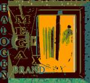

Home Artist links Label link

MegaXBrand - Halogen
| Artist: | MegaXBrand |
| Title: | Halogen |
| Label: | Nutracor Records |
| Length(s): | 46 minutes |
| Year(s) of release: | 2001 |
| Month of review: | [03/2003] |
Sample this album in MP3 or RealAudio
The music
For no apparent reason MegaXBrand call themselves "art prog". The bio does tell the one man band emerged from "the emerging punk band" Hallucidor, in a way I'm not sure should be taken serious. Anyway, punk moves closer to the mark, already. This album is mostly wave-ish material that would fit in nicely with some stuff released in the first half of the eighties. Some hints of Joy Division, and the oddness found, for instance, with Wire. Jangling guitars, gloomy, dark and depressing vocals. The sound quality also fits nicely with the, often independent, recordings from said era. The end result is an album of experimental wave music that has its moments, but is not of real interest to this forum.
© Roberto Lambooy